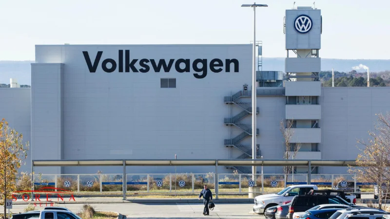

این شرکت آلمانی که دفتر فروش مرکزی آن در شهر ولفسبورگ آلمان واقع شده است؛ در حال حاضر محصولات متنوعی را تحت عنوان برندهای دیگر نظیر آئودی،SEAT، اسکودا و… تولید میکند. محصولات این شرکت از نظر نوآوری جزء هوشمندترین و از نظر ایمنی جزء بهترین خودروهایی هستند که در بازار میتوانید پیدا کنید. فولکس واگن علاوه بر تولیدات با کیفیت دیزلی، قرار است با هدف متحول کردن کسبوکار خود، تا پایان سال 2025 بیش از 30 خودروی برقی جدید را به بازار معرفی کند. این کمپانی سالانه بیش از 300 میلیارد دلار درآمد دارد.
